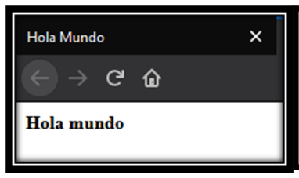
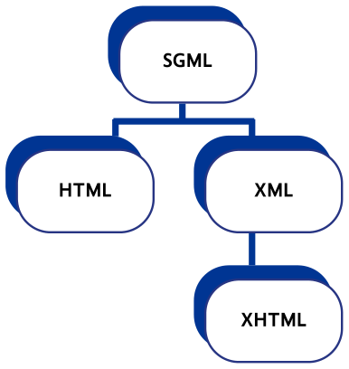
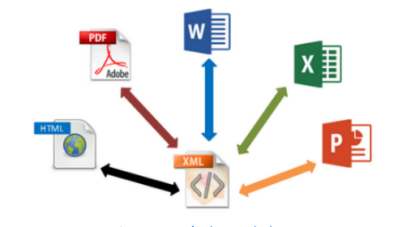
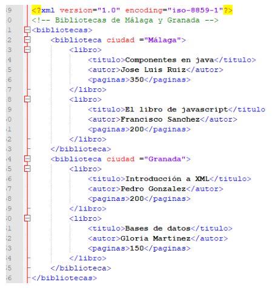
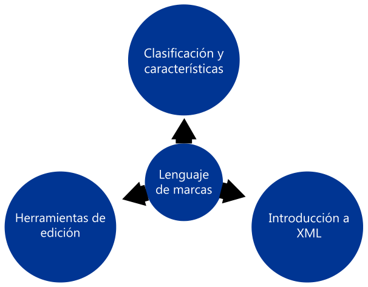
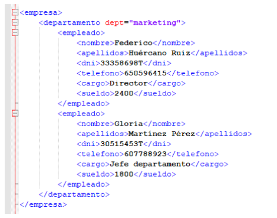

Objetivos
- Conocer las características generales de los lenguajes de marcas, su clasificación y uso en diferentes ámbitos.
- Identificar herramientas de edición para trabajar con los lenguajes de marcas.
- Obtener los conocimientos básicos sobre XML de cara a profundizar en próximos temas.
Introducción y contextualización práctica
Las personas usamos en nuestro lenguaje escrito ciertas reglas, formatos y colores que nos permiten comunicarnos con el resto de individuos para que el mensaje se interprete.
De igual forma, los documentos con los que trabajamos en Internet deben seguir unas reglas para que se puedan visualizar o compartir y no haya problemas en su interpretación. Los lenguajes de marcas son un mecanismo que nos va a permitir realizar este cometido. El uso más frecuente es la creación de páginas web.
A continuación, vamos a plantear un caso práctico a través del cual podremos aproximarnos de forma práctica a la teoría de este tema.
Concepto y características generales. Orígenes y evolución
Un lenguaje de marcas nos va a permitir crear documentos para representar información que podremos visualizar en un navegador web, usar como ficheros de configuración o utilizar en el intercambio de información entre aplicaciones informáticas.
En su estructura vamos a disponer de etiquetas que van a definir los datos que queremos representar. Para definir estas etiquetas se utilizan los caracteres <, > y /.
Ejemplo de documento codificado con lenguaje de marcas:
<html>
<head>
<title>Hola Mundo</title>
</head>
<body>
<p>
<b>Hola mundo</b>
</p>
</body>
</html>
2.1. Características generales
En la siguiente tabla se muestran las características generales de los lenguajes de marcas.
| Característica | Descripción |
|---|---|
| Uso de texto plano | Al ser texto plano, este tipo de lenguajes pueden ser editados por cualquier editor o procesador de textos. Esto hace que sean independientes de la plataforma. |
| Compacto | Las marcas se incluyen dentro del propio contenido, pero no se muestran en el resultado final. Por ejemplo, con la marca <b>Hola mundo</b> se indica que el valor «Hola mundo» debe aparecer en negrita, pero en el navegador web no aparecen las marcas <b> y </b>. |
| Procesamiento fácil y ligero | Es fácil crear documentos con etiquetas que se puedan mezclar con lenguajes especializados según la funcionalidad buscada. |
| Flexible | Al basarse en etiquetas, les otorga una flexibilidad muy alta que permite su utilización en diferentes áreas de trabajo. |
2.2. Orígenes y evolución
El origen de los lenguajes de marcas es el GML (Generalized Markup Language), que surgió como una forma de estandarizar la manera en que se compartía información en los sistemas informáticos. Con esto, se conseguía que la información fuera independiente del sistema operativo o software de aplicación utilizado. Este formato evolucionó hacia SGML (Standard Generalized Markup Language), que solventó deficiencias de GML y dio lugar a la ISO 8879. Sin embargo, este último es un lenguaje complejo que solo se usa para aplicaciones industriales.
En los años 90, Tim Berners-Lee simplifica SGML y crea el lenguaje de marcas HTML, que permite que se visualice información en un navegador web.
HTML se presentaba como una opción muy buena para la creación de contenido para la web, pero estaba limitado en el uso de etiquetas y en la creación de contenido dinámico. Para resolver estas deficiencias, en 1998 se establece el estándar XML, que se convierte en un lenguaje de marcas estructural libre en la creación de etiquetas.
Por último, podemos identificar XHTML (Extensible HyperText Markup Language), que se trata de una nueva versión de HTML basada en XML. Con este lenguaje se consigue que el documento HTML sea más robusto y más estricto en la construcción de la página web. Esto nos va a permitir identificar errores e inconsistencias de manera más precisa.

Clasificación e identificación de los lenguajes más relevantes
Los lenguajes de marcas los podemos clasificar en tres tipos:
- De presentación: Se utiliza para el diseño y muestra del texto de un documento. Es útil para información pequeña, pero al no ser estructurado es inviable para proyectos más voluminosos. Un ejemplo es el usado en procesadores de textos como Word, donde podemos ver las marcas si activamos (¶).
- De procedimiento: Dispone de la funcionalidad de presentación, pero también incluye visibilidad de lo que se está editando. De esta manera se interpretan ciertos códigos que nos van a permitir, por ejemplo, elegir el tipo de letra o la negrita. Un ejemplo puede ser el lenguaje PostScript utilizado para el diseño e impresión de documentos.
- Descriptivo o semántico: Se utilizan etiquetas para la descripción de partes del texto, pero nada más. No se indica cómo se tienen que representar ni el orden a seguir. En este tipo de lenguajes tenemos SGML y sus derivados como HTML, XML y XHTML.
3.1. Utilización en distintos ámbitos
Los lenguajes de marcas se utilizan en numerosos ámbitos debido a su facilidad para representar información y poder compartirla de manera ágil y fácil. Debido a su característica de independencia de plataforma y tecnología, permiten su fácil integración en aplicaciones informáticas.
Los usos más demandados son:
- Compartir información entre plataformas.
- Base de datos: XML, al tener información estructurada, nos va a permitir interrogarla para obtener resultados filtrados.
- Conversión: podemos convertir este formato a los más utilizados actualmente.

Caso práctico 1: «Tipos de lenguajes de marcas»
Planteamiento: El objetivo de esta actividad es tomar conciencia de la gran cantidad de lenguajes de marcas que se están utilizando actualmente.
Nudo: Busca en Internet 10 lenguajes de marcas y clasifícalos según si son lenguajes de marcas procedimentales, de presentación o semánticos.
Desenlace:
| Lenguaje | Tipo |
|---|---|
| XML | Descriptivo o semántico |
| HTML | Descriptivo o semántico |
| JSON | Descriptivo o semántico |
| BBCode | Procedimental y de presentación |
| TeX | Procedimental y de presentación |
| SVG | Procedimental y de presentación |
| troff | Procedimental y de presentación |
| Markdown | Procedimental y de presentación |
| GML | Descriptivo y semántico |
| Office Open XML | Procedimental y de presentación |
Herramientas de edición
A la hora de trabajar con lenguajes de marcas existen numerosas herramientas de edición que nos van a permitir que la labor de creación de ficheros HTML o XML sea más fácil. Estas herramientas pueden controlar posibles errores o incluso autocompletar ciertas etiquetas que son de uso común.
5.1. Bloc de notas
La forma más inmediata de trabajar con el lenguaje de marcas es utilizar el bloc de notas de un sistema operativo como Windows. Como se trata de texto plano, no vamos a tener ningún problema en utilizar esta herramienta para crear los documentos. Hay que tener en cuenta que a la hora de grabarlo hay que cambiar la extensión a HTML para que se pueda visualizar en el navegador web.
5.2. Notepad++
Es un editor libre muy potente que permite la elección de numerosos lenguajes tanto de programación como de marcas. Según se elija un lenguaje u otro, la herramienta va coloreando las etiquetas o palabras reservadas de ese lenguaje, lo que permite identificar de manera muy visual los diferentes bloques del documento. También permite enumerar las líneas. Esto es muy útil a la hora de depurar porque nos permite identificar rápidamente la línea donde se encuentra el error.
5.3. Visual Studio Code
Esta herramienta está desarrollada por Microsoft. Al igual que con Notepad++, la podemos usar con los lenguajes de programación o de etiquetas, configurar la vista del interfaz como más nos guste e identificar bloques y etiquetas con colores.
Una característica muy interesante de este programa es el autocompletado de ciertas etiquetas a medida que vamos escribiendo y también la posibilidad de instalar plugins que aumenten su capacidad. Un ejemplo de plugin puede ser Live Server, que nos va a crear un servidor local que permite la recarga en vivo del documento HTML que se esté creando. También disponemos de herramientas online como CodePen u Online HTML Editor.
XML: características propias y etiquetas
Como ya se ha comentado en apartados anteriores, XML surge de la simplificación de SGML y se puede considerar un metalenguaje porque gracias a él se pueden definir otros lenguajes específicos, como por ejemplo XHTML.
Una de las ventajas con respecto a HTML es que no está limitado a un número concreto de etiquetas y, cuando estas se definen, se está indicando el significado de los datos que contienen. Es importante indicar que XML no sustituye a HTML, sino que es otro tipo de lenguaje de marcas.
Este apartado se va a desarrollar en profundidad en posteriores temas, pero sirva este punto como introducción a este lenguaje para ir asimilando conceptos.
- Se pueden crear las etiquetas que se consideren necesarias para crear el contenido apropiado.
- Las etiquetas también pueden tener asociados atributos que permiten diferenciar valores.
- Utiliza un esquema en forma de árbol que nos permite crear estructuras jerárquicas partiendo de un nodo raíz.
- El diseño y la estructura no son dependientes entre sí.
Un documento XML está definido por una estructura en árbol jerárquica y consta de dos partes principales:
- Prólogo: Aparece al comienzo del documento y contiene referencias de cómo está definido el contenido del XML.
- Cuerpo: Contiene la información en sí.
En el siguiente ejemplo se puede ver un documento XML tipo. La primera línea identifica el prólogo, donde se indica la versión y el tipo de codificación. Es importante la codificación para que no haya problemas con caracteres como la ñ o los acentos.
<?xml version="1.0" encoding="iso-8859-1"?>
<biblioteca>
<libro>
<titulo>El Quijote</titulo>
<autor>Miguel de Cervantes</autor>
<paginas>350</paginas>
</libro>
</biblioteca>A partir de la línea 2 tenemos el cuerpo, donde vemos información acerca de una biblioteca y los libros que contiene. Por cada libro tenemos los datos de su título, autor y número de páginas. Se pueden definir las etiquetas que se necesiten siempre que vayan encerradas entre los símbolos < y >. Cada etiqueta debe ir emparejada con su etiqueta de cierre, que la definimos con los caracteres </.
Elaboración de documentos bien formados: estructura y sintaxis
Un documento XML se dice que está bien formado cuando cumple las reglas sintácticas definidas en la recomendación W3C con respecto al estándar XML.
Dichas normas básicas son:
- El documento debe tener un prólogo definido donde se indique versión y codificación del documento.
- Al tener una estructura en forma de árbol, siempre debe existir un nodo raíz del que partirá el resto de la información. En el ejemplo, el nodo raíz sería
biblioteca. - Las etiquetas tienen que estar emparejadas, es decir, toda etiqueta de apertura debe tener una de cierre.
- Los atributos de las etiquetas deberán ir encerrados entre comillas simples o dobles y no se pueden repetir dentro de la misma etiqueta.
- Es sensible a mayúsculas y minúsculas. Por lo tanto, la etiqueta
<coche>es diferente a la etiqueta<Coche>. - Los nombres de las etiquetas, al igual que ocurre con las variables en lenguajes de programación, deben seguir una serie de reglas, como no comenzar por número ni utilizar caracteres reservados como
/. - Los comentarios deben ir fuera de las etiquetas y se representan con los símbolos
<!--para su apertura y-->para su cierre.
En el ejemplo se incluye el atributo ciudad como información adicional sobre dónde se encuentra la biblioteca y un comentario sobre el objetivo del documento XML.
<?xml version="1.0" encoding="iso-8859-1"?>
<!-- Ejemplo de biblioteca en XML -->
<biblioteca ciudad="Malaga">
<libro>
<titulo>El Quijote</titulo>
<autor>Miguel de Cervantes</autor>
<paginas>350</paginas>
</libro>
</biblioteca>Para poder comprobar si un documento está bien formado existen herramientas que nos ayudan a comprobarlo. Entre ellas está XML Copy Editor.
Caso práctico 2: «Bibliotecas interprovinciales»
Planteamiento: Se quiere tener información sobre los libros de informática que hay en las bibliotecas de Málaga y Granada.
Nudo: Según el formato indicado en el ejemplo, podemos añadir dos libros por ciudad, teniendo como nodo raíz la etiqueta <bibliotecas>.
Desenlace: El resultado sería el siguiente.
<?xml version="1.0" encoding="iso-8859-1"?>
<!-- Bibliotecas de Málaga y Granada -->
<bibliotecas>
<biblioteca ciudad="Málaga">
<libro>
<titulo>Componentes en java</titulo>
<autor>Jose Luis Ruiz</autor>
<paginas>350</paginas>
</libro>
<libro>
<titulo>El libro de javascript</titulo>
<autor>Francisco Sanchez</autor>
<paginas>200</paginas>
</libro>
</biblioteca>
<biblioteca ciudad="Granada">
<libro>
<titulo>Introducción a XML</titulo>
<autor>Pedro Gonzalez</autor>
<paginas>200</paginas>
</libro>
<libro>
<titulo>Bases de datos</titulo>
<autor>Gloria Martinez</autor>
<paginas>150</paginas>
</libro>
</biblioteca>
</bibliotecas>
Utilización de espacios de nombres en XML
Con el uso del espacio de nombres se va a poder evitar la ambigüedad de etiquetas cuando queramos unir dos o más ficheros XML que contengan elementos con el mismo nombre. Se va a poder definir a qué fichero XML pertenece cada uno de esos elementos y así diferenciarlos.
En el documento, las etiquetas que sean ambiguas van a estar precedidas de un prefijo que identificará su procedencia, seguido de dos puntos:
<prefijo:etiqueta></prefijo:etiqueta>Para poder utilizar los prefijos en un espacio de nombres hay que declararlo e indicarle un índice con el URI que tenga asociado mediante el atributo especial xmlns. Dicha declaración hay que realizarla entre el prólogo y el cuerpo.
<conexión>://<direccion_del_servidor>/<sección1>/<sección2>/…9.1. Ejemplo: unión de dos ficheros XML con etiquetas ambiguas
Disponemos de dos ficheros XML que hacen referencia a dos estructuras y significados diferentes, pero que usan etiquetas iguales. Un fichero XML representa a un canal de agua y otro a canales de televisión.
Canal de agua
<?xml version="1.0" encoding="iso-8859-1"?>
<!-- Canal de agua -->
<canal>
<ubicacion>Segovia</ubicacion>
<capacidad>300 litros</capacidad>
</canal>Canal de televisión
<?xml version="1.0" encoding="iso-8859-1"?>
<!-- Canal de televisión -->
<canal>
<cadena>Antena3</cadena>
<frecuencia>698 MHz</frecuencia>
</canal>Unión de los ficheros usando espacio de nombres
<?xml version="1.0" encoding="iso-8859-1"?>
<canalagua:ejemplo xmlns:canal_agua="http://...xml1"
xmlns:canal_television="http://...xml2">
<canal_agua:canal>
<ubicacion>Segovia</ubicacion>
<capacidad>300 litros</capacidad>
</canal_agua:canal>
<canal_television:canal>
<cadena>Antena3</cadena>
<frecuencia>698 MHz</frecuencia>
</canal_television:canal>
</canalagua:ejemplo>Definición de URI en W3C.
Resumen y resolución del caso práctico de la unidad
En esta unidad introductoria hemos visto las características generales de los lenguajes de marcas y las ventajas que aportan para el tratamiento de la información. Existe una clasificación según el uso de este tipo de lenguajes y son numerosos sus ámbitos de aplicación.
Para hacer el trabajo con este tipo de documentos más fácil existen muchas herramientas de edición que nos permitirán agilizar su creación.
Por último, se ha realizado una introducción a los ficheros XML como ejemplo de lenguaje de marcas, indicando sus características, cómo debe estar formada su estructura y el uso de espacios de nombres cuando nos encontramos con etiquetas ambiguas.

Resolución del caso práctico de la unidad
El formato ideal sería XML porque nos va a permitir que se pueda visualizar en cualquier plataforma o aplicación. La información que vamos a incluir son los datos personales, departamento al que pertenece, cargo y sueldo.
En el ejemplo se muestran dos empleados y un departamento, pero se podría escalar según necesitemos.
<empresa>
<departamento dept="marketing">
<empleado>
<nombre>Federico</nombre>
<apellidos>Huércano Ruiz</apellidos>
<dni>33358698T</dni>
<telefono>650596415</telefono>
<cargo>Director</cargo>
<sueldo>2400</sueldo>
</empleado>
<empleado>
<nombre>Gloria</nombre>
<apellidos>Martínez Pérez</apellidos>
<dni>30515453T</dni>
<telefono>607788923</telefono>
<cargo>Jefe departamento</cargo>
<sueldo>1800</sueldo>
</empleado>
</departamento>
</empresa>
Bibliografía
- Notepad++
- Visual Studio Code
- CodePen
- Online HTML Editor
- XML Copy Editor